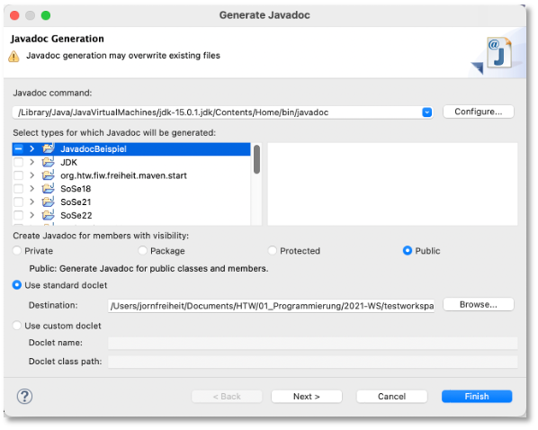
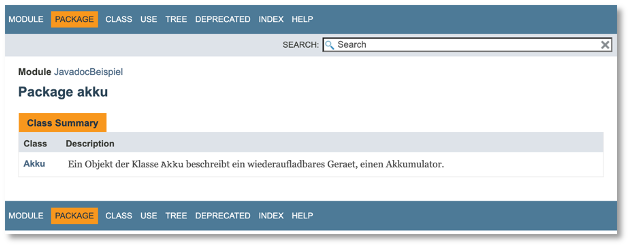

Javadoc¶
Javadoc ist ein Werkzeug, das Teil des Java Development Kit (JDK) ist. Es erzeugt aus Javadoc-Kommentaren HTML-Seiten, die im Browser aufgerufen werden können. Die Javadoc-Kommentare aller Klassen aus den Java-Standardpaketen finden Sie z.B. hier (Java Version 11).
Ein Javadoc-Kommentar beginnt mit /** und endet mit */. Ein solcher Kommentar kann sich über mehrer Zeilen erstrecken. Hier nochmal die drei Möglichkeiten der Kommentierung in Java:
// einzeiliger Kommentar - Kommentar endet am Zeilenende
/*
Blockkommentar
kann sich über mehrer Zeilen erstrecken
*/
/**
Javadoc-Kommentar
wie Blockkommentar über mehrere Zeilen
aus Javadoc-Kommentaren erzeugt javadoc
HTML-Seiten
*/
Eine Anleitung dazu, wie Javadoc-Kommentare geschrieben werden sollten, findet sich hier. Diese Anleitung enthält auch nützliche Beispiele.
Ein einfaches Beispiel¶
Wir wollen die Dokumentation an einem (sehr) einfachen Beispiel erläutern. Gegeben sei folgende Klasse Akku.java.
1 2 3 4 5 6 7 8 9 10 11 12 13 14 15 16 17 18 19 20 21 22 23 24 25 26 27 28 29 30 31 32 33 34 35 36 37 38 39 40 41 42 43 44 45 46 47 48 49 50 51 | |
Javadoc-Kommentierung des Beispiels¶
Wir schauen uns zunächst mal eine mögliche (nicht wirklich gute, z.B. weil es nicht auf Englisch ist) Javadoc-Kommentierung an und betrachten dann Einzelheiten:
1 2 3 4 5 6 7 8 9 10 11 12 13 14 15 16 17 18 19 20 21 22 23 24 25 26 27 28 29 30 31 32 33 34 35 36 37 38 39 40 41 42 43 44 45 46 47 48 49 50 51 52 53 54 55 56 57 58 59 60 61 62 63 64 65 66 67 68 69 70 71 72 73 74 75 76 77 78 79 80 81 82 83 84 85 86 87 88 89 90 91 92 93 94 95 96 97 98 99 100 101 102 103 104 105 106 107 108 109 110 111 112 113 114 115 116 117 118 | |
Wichtig ist auch, dass Sie auch das Modul (Ihr Java-Projekt) kommentieren können und auch jedes einzelne Package darin. Um das Package zu kommentieren, erstellen Sie in Ihrem Package eine package-info.java und fügen darin Ihre Javadoc-Kommentare ein. Um Ihr Modul (Ihr Java-Projekt) zu kommentieren, fügen Sie in die module-info.java den Javadoc-Kommentar ein, z.B.
/**
* Dieses Modul enthaelt die Klassen Akku und AkkuBestand.
* AkkuBestand implementiert ein Array von Akkus.
*
* @author J. Freiheit
* @version 1.0
*/
module JavadocBeispiel
{
}
Generate Javadoc...¶
Wenn Sie mit der Javadoc-Kommentierung fertig sind, dann wählen Sie in Eclipse im Menüpunkt Project den Menüeintrag Generate Javadoc.... Es erscheint folgendes Fenster:

Hier können Sie insbesondere auswählen, für welches Java-Projekt Sie die Javadoc-Dokumentation erzeugen lassen möchten. Es ist auch die Auswahl von Paketen und Klassen möglich. Außerdem werden in der Standardeinstellung nur die Dokumentationen für public Eigenschaften erzeugt, also für als public deklarierte Methoden und Objektvariablen. Auch das lässt sich in dieser Eingabemaske ändern. Nachdem Sie Finish geklickt haben, erscheint in der Konsole so etwas wie:
Loading source files for package akku...
Constructing Javadoc information...
Standard Doclet version 15.0.1+9-18
Building tree for all the packages and classes...
gefolgt von einer Liste aller .html-Dateien, die erzeugt werden. Eventuell gibt es jedoch auch Fehlerausgaben, die Sie erst noch beheben müssen. Nachdem alle .html-Dateien erzeugt wurden, gibt es in Ihrem Workspace in dem Projektordner, dessen Javadoc-Dokumentation Sie gerade erzeugt haben, einen neuen Ordner doc:

In diesem Ordner befinden sich mehrer .html-Dateien (und Ordner und .js- sowie .css-Datein). Öffnen Sie die index.html durch Doppelklick. Diese öffnet sich im Browser und es erscheint folgende Ansicht:

Klicken Sie darin auf den Button Package und es erscheint:

Klicken Sie auf die Klasse Akku und es erscheint:
Tags¶
Wie Sie in den Kommentaren vielleicht erkannt haben, gibt es darin einige @ gefolgt von Schlüsselwörtern. Dabei handelt es sich um sogenannte Tags. Hier eine Liste der Tags, die wir verwendet haben:
- @author - für den/die Programmierer_innen des Codes; bei mehreren Autor_innen entweder je Autor_in mit
@author-Tag oder Autor_innennamen durch Komma getrennt, siehe auch hier - @version - gibt die Version des Codes an, siehe auch hier
- @param - beschreibt einen Parameter der Methode; für jeden Parameter wird ein eigener
@param-Tag verwendet; siehe auch hier - @return - beschreibt die Rückgabe einer Methode mit Rückgabetyp; auch den Wertebereich der Rückgabe erläutern; siehe auch hier
Weitere Tags¶
Mit den oben genannten Tags können Klassen bereits gut dokumentiert werden. Es gibt jedoch noch weitere Tags, die wir hier kurz auflisten wollen (Liste ist aber nicht vollständig):
- @deprecated - kennzeichnet, dass diese Klasse oder Methode nicht weiter genutzt werden soll, siehe auch hier und hier
- @throws - synonym zu
@exception; in Verbindung zu der Exception (den Exceptions), die durch eine Methode geworfen werden kann/können und für welche Fälle die jeweilige Exception geworfen wird, siehe auch hier - @see - erstellt einen Link zu einer Klasse, Methode, etc. in der API-Dokumentation (Syntax:
@see package.class#member label, wobeilabelsichtbar undpackage.class#memberder Link), siehe auch hier;@seeist ähnlich zu {@ link}, aber ein{@link}beschreibt einen In-line-Link, während der@see-Link imSee also-Bereich aufgeführt wird.